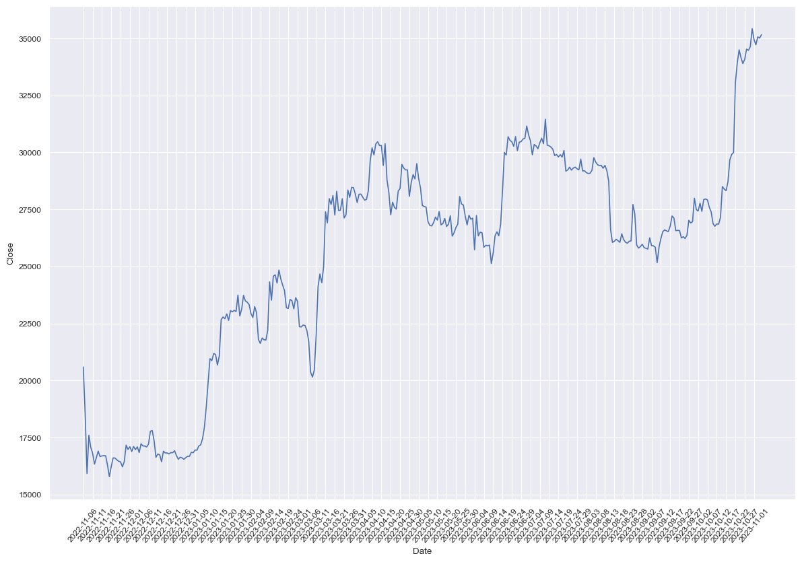
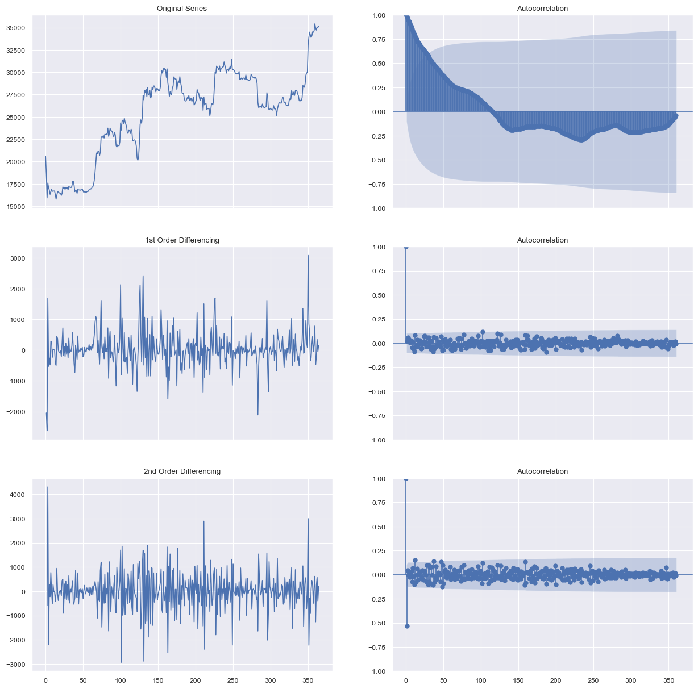
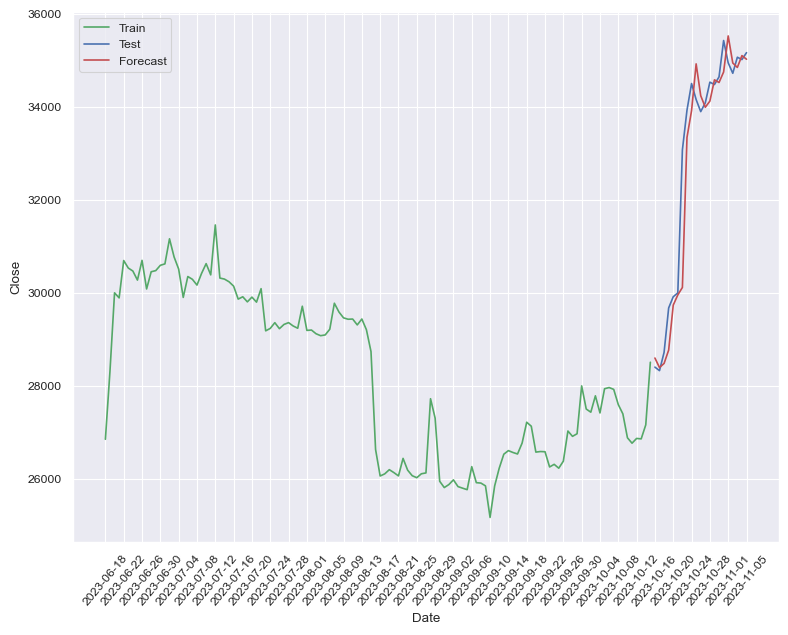

import finnhub
import pandas as pd
from time import mktime
from datetime import datetime, timedelta
import time
import seaborn as sns
import matplotlib.pyplot as plt
#Evitar errores
import warnings
warnings.filterwarnings("ignore")
# formato de graficas
sns.set_theme()
sns.set_context("paper")
# api_key de finnhub (https://finnhub.io/dashboard)
finnhub_client = finnhub.Client(api_key="ckuirj9r01qmtr8l8f40ckuirj9r01qmtr8l8f4g")
#stock = 'AAPL' # acciones de apple
stock = 'BINANCE:BTCUSDT'
resolution = 'D' # serie diaria
end_date = datetime.now() #fecha de hoy
#start_date = end_date - timedelta(days=365) # desde hoy con historia de 365
start_date = 1590988249
end = int(end_date.timestamp()) # transforma fecha final unix-time a entero
start = int(start_date.timestamp())# transforma fecha inicial unix-time a entero
AAPL_res = finnhub_client.stock_candles(stock, resolution, start, end) #respuesta
AAPL_df = pd.DataFrame(AAPL_res) # transformar respuesta pandas
AAPL_df.head()
---------------------------------------------------------------------------
AttributeError Traceback (most recent call last)
Cell In[6], line 2
1 end = int(end_date.timestamp()) # transforma fecha final unix-time a entero
----> 2 start = int(start_date.timestamp())# transforma fecha inicial unix-time a entero
4 AAPL_res = finnhub_client.stock_candles(stock, resolution, start, end) #respuesta
5 AAPL_df = pd.DataFrame(AAPL_res) # transformar respuesta pandas
AttributeError: 'int' object has no attribute 'timestamp'
# funcion que transforma fecha int a fecha humana
def date_format(date_col):
return datetime.fromtimestamp(date_col).strftime('%Y-%m-%d')
date_format(1602460800)
'2020-10-11'
AAPL_df['t'] = AAPL_df['t'].apply(date_format) # transforma la columna t a fecha humana con la funcion 'date_format' creada
AAPL_df.head()
| c | h | l | o | s | t | v | |
|---|---|---|---|---|---|---|---|
| 0 | 20591.13 | 21069.77 | 20384.89 | 20905.58 | ok | 2022-11-06 | 386977.603370 |
| 1 | 18547.23 | 20700.88 | 17166.83 | 20590.67 | ok | 2022-11-07 | 760705.362783 |
| 2 | 15922.81 | 18587.76 | 15588.00 | 18545.38 | ok | 2022-11-08 | 731926.929729 |
| 3 | 17601.15 | 18199.00 | 15754.26 | 15922.68 | ok | 2022-11-09 | 608448.364320 |
| 4 | 17070.31 | 17695.00 | 16361.60 | 17602.45 | ok | 2022-11-10 | 393552.864920 |
# renombrar las columnas
AAPL_df.rename(columns = {'c':'Close','h':'High','l':'Low','o':'Open','t':'Date','v':'Volume'}, inplace = True)
AAPL_df.drop('s', axis=1, inplace = True)
AAPL_df.head()
| Close | High | Low | Open | Date | Volume | |
|---|---|---|---|---|---|---|
| 0 | 20591.13 | 21069.77 | 20384.89 | 20905.58 | 2022-11-06 | 386977.603370 |
| 1 | 18547.23 | 20700.88 | 17166.83 | 20590.67 | 2022-11-07 | 760705.362783 |
| 2 | 15922.81 | 18587.76 | 15588.00 | 18545.38 | 2022-11-08 | 731926.929729 |
| 3 | 17601.15 | 18199.00 | 15754.26 | 15922.68 | 2022-11-09 | 608448.364320 |
| 4 | 17070.31 | 17695.00 | 16361.60 | 17602.45 | 2022-11-10 | 393552.864920 |
plt.figure(figsize = (12,8))
ax = sns.lineplot(data=AAPL_df, x="Date", y="Close")
freq = int(5)
xtix = ax.get_xticks()
ax.set_xticks(xtix[::freq]) # evita que las etiquetas se sobrepongan
plt.tight_layout()
plt.xticks(rotation=50);

import plotly.graph_objects as go
fig = go.Figure(data=[go.Candlestick(x = AAPL_df.Date,
open = AAPL_df.Open,
high = AAPL_df.High,
low = AAPL_df.Low,
close = AAPL_df.Close)
])
fig.update_layout(
title="Apple Inc. (AAPL)",
xaxis_title="Day",
yaxis_title="AAPL-USD",
font=dict(
family="Courier New, monospace",
size=12,
color="RebeccaPurple"
)
)
fig.update_layout(xaxis_rangeslider_visible=False)
fig.show()
# prueba de estacionariedad
from statsmodels.tsa.stattools import adfuller
from numpy import log
result = adfuller(AAPL_df.Close)
print('ADF Statistic: %f' % result[0])
print('p-value: %f' % result[1])
ADF Statistic: -0.491082
p-value: 0.893745
La accion de Apple no es estacionaria, el p-valor de la prueba mayor 0.05 no se rechaza la H0 que sugiere estacionariedad con la prueba de dicky-fuller
Valor = 0,668546 > 0,05. Dado que el valor de Adfuller es mayor que un determinado valor alfa especificado (5%, nivel de significación o intervalo de confianza del 95%), se acepta la hipótesis nula , es decir, la serie temporal no es estacionaria
import numpy as np, pandas as pd
from statsmodels.graphics.tsaplots import plot_acf
import matplotlib.pyplot as plt
plt.rcParams.update({'figure.figsize': (15,15)})
fig, axes = plt.subplots(3, 2, sharex=True)
axes[0, 0].plot(AAPL_df.Close); axes[0, 0].set_title('Original Series')
plot_acf(AAPL_df.Close, ax=axes[0, 1], lags = 360);
axes[1, 0].plot(AAPL_df.Close.diff()); axes[1, 0].set_title('1st Order Differencing')
plot_acf(AAPL_df.Close.diff().dropna(), ax=axes[1, 1], lags = 360);
axes[2, 0].plot(AAPL_df.Close.diff().diff()); axes[2, 0].set_title('2nd Order Differencing')
plot_acf(AAPL_df.Close.diff().diff().dropna(), ax=axes[2, 1], lags = 360);

n_AAPL = len(AAPL_df.Close); n_test = 21 # This can be changed
train_size = n_AAPL - n_test
train = AAPL_df.Close.iloc[:train_size]
dates_train = AAPL_df.Date.iloc[:train_size]
test_1w = AAPL_df.Close.iloc[train_size:train_size + n_test]
dates_1w = AAPL_df.Date.iloc[train_size:train_size + n_test]
print("train:", train.shape)
print("test_1w:", test_1w.shape)
train: (344,)
test_1w: (21,)
train_df = AAPL_df[["Date", "Close"]].iloc[:train_size] # enetrenamiento
test_1w_df = AAPL_df[["Date", "Close"]].iloc[train_size:train_size + n_test] # test
from statsmodels.tsa.arima.model import ARIMA
import warnings
warnings.filterwarnings("ignore")
best_aic = np.inf
best_bic = np.inf
best_order = None
best_mdl = None
pq_rng = range(5) # de 0 a 4 preciosa pasados
d_rng = range(3) #
for i in pq_rng: #p de ar (autor regresion)
for d in d_rng: #i de integracion
for j in pq_rng: #q de ma (media movil)
try:
# print(i, d, j)
tmp_mdl = ARIMA(train, order=(i,d,j)).fit()
tmp_aic = tmp_mdl.aic
if tmp_aic < best_aic: #tmp_aic inicia en infinito y se compara con cada modelo generado por ARIMA
best_aic = tmp_aic #toma el mejor AIC
best_order = (i, d, j) #Toma los mejores parametros
best_mdl = tmp_mdl #toma el mejor modelo
except: continue
print('aic: {:6.5f} | order: {}'.format(best_aic, best_order))
aic: 5335.27764 | order: (3, 2, 1)
import pmdarima as pm
model = pm.arima.auto_arima(train, start_p=1, start_q=1,
test='adf', # use adftest to find optimal 'd'
max_p=3, max_q=3, # maximum p and q
m=1, # frequency of series
d=None, # let model determine 'd'
seasonal=False, # No Seasonality
start_P=0,
D=0,
trace=True,
error_action='ignore',
suppress_warnings=True,
stepwise=True)
Performing stepwise search to minimize aic
ARIMA(1,1,1)(0,0,0)[0] intercept : AIC=5341.322, Time=0.22 sec
ARIMA(0,1,0)(0,0,0)[0] intercept : AIC=5340.931, Time=0.00 sec
ARIMA(1,1,0)(0,0,0)[0] intercept : AIC=5340.147, Time=0.03 sec
ARIMA(0,1,1)(0,0,0)[0] intercept : AIC=5339.555, Time=0.09 sec
ARIMA(0,1,0)(0,0,0)[0] : AIC=5339.476, Time=0.00 sec
Best model: ARIMA(0,1,0)(0,0,0)[0]
Total fit time: 0.351 seconds
from statsmodels.graphics.tsaplots import plot_predict
model = ARIMA(train, order=best_order)
model_fit = model.fit()
plt.figure(figsize = (12,8))
fig, ax = plt.subplots()
ax = train.loc[1:].plot(ax=ax)
plot_predict(model_fit, 1, ax=ax)
plt.show();
<Figure size 1200x800 with 0 Axes>
from sklearn.metrics import r2_score
def forecast_accuracy(forecast, actual, str_name):
mape = np.mean(np.abs(forecast - actual)/np.abs(actual)) # MAPE
mae = np.mean(np.abs(forecast - actual)) # MAE
rmse = np.mean((forecast - actual)**2)**.5 # RMSE
mse = np.mean((forecast - actual)**2) # MSE
r2 = r2_score(forecast, actual)
df_acc = pd.DataFrame({'MAE': [mae],
'MSE': [mse],
'MAPE': [mape],
'RMSE': [rmse],
'R2': [r2]},
index=[str_name])
return df_acc
def arima_rolling(history, test):
predictions = list()
for t in range(len(test)):
model = ARIMA(history, order=best_order)
model_fit = model.fit()
output = model_fit.forecast()
yhat = output[0]
predictions.append(yhat)
obs = test[t]
history.append(obs)
print('predicted=%f, expected=%f' % (yhat, obs))
return predictions
test_1wl = test_1w.tolist()
yhat_1w = arima_rolling(train.tolist(), test_1wl)
predicted=28591.165059, expected=28395.910000
predicted=28386.656485, expected=28320.000000
predicted=28475.765564, expected=28713.710000
predicted=28761.887475, expected=29669.040000
predicted=29730.102859, expected=29909.800000
predicted=29949.389271, expected=29992.460000
predicted=30109.777705, expected=33069.990000
predicted=33336.911030, expected=33922.730000
predicted=33912.319662, expected=34496.050000
predicted=34918.900730, expected=34151.660000
predicted=34234.583780, expected=33892.020000
predicted=33985.765489, expected=34081.000000
predicted=34118.016483, expected=34525.890000
predicted=34575.649403, expected=34474.730000
predicted=34518.488965, expected=34639.770000
predicted=34744.495586, expected=35421.430000
predicted=35520.128885, expected=34941.590000
predicted=34938.458129, expected=34716.780000
predicted=34842.566338, expected=35062.070000
predicted=35097.042902, expected=35011.880000
predicted=35018.981971, expected=35160.330000
forecast_accuracy(np.array(test_1wl), np.array(yhat_1w), "week 1")
| MAE | MSE | MAPE | RMSE | R2 | |
|---|---|---|---|---|---|
| week 1 | 453.22938 | 582232.087224 | 0.014176 | 763.04134 | 0.906148 |
plt.figure(figsize = (8, 6))
ax = sns.lineplot(x=dates_train[-120:], y=train[-120:], label="Train", color='g')
sns.lineplot(x=dates_1w, y=test_1wl, label="Test", color='b')
sns.lineplot(x=dates_1w, y=yhat_1w, label="Forecast", color='r')
freq = int(4)
xtix = ax.get_xticks()
ax.set_xticks(xtix[::freq])
plt.tight_layout()
plt.xticks(rotation=50);
